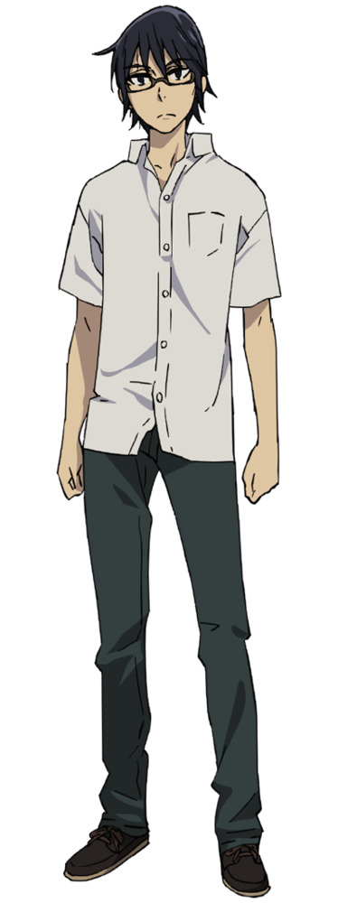

En esta sección voy a contarles algunas cosas sobre mi... sean discretos, no muchos lo saben.
Tengo una habilidad la cuál me permite volver en el tiempo cada vez que algo malo pasa o va a pasar...
Sé que no suena creíble, pero en 2006, luego de que mi madre fuera asesinada, volví 18 años en el tiempo.
Primero no comprendía por qué, pero luego me di cuenta... en 1988, varias niñas habían desaparecido o sido encontradas muertas. La primera de ellas, era mi compañera de clase en ese entonces, Kayo Hinazuki.
Durante meses, me dediqué a ponerla a salvo, y cuando finalmente logré descubrir al asesino, que resultó ser nuestro maestro de primaria, este me encerró en su coche y lo tiró al lago.
Milagrosamente sobreviví, pero estuve en coma durante 15 años. La buena noticia es que Kayo sobrevivió, e incluso tuvo hijos. Además, el asesino vino a buscarme al hospital y logré engañarlo, haciendo que por fin recibiera su merecido.
Y esooo es todo por hoy, gracias por interesarte en mí!
Por cierto, olvidaba poner una foto de mi yo actual, ya no soy el niño que vieron al inicio
